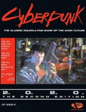

|  | Technical data |
| Role-playing game (2nd edition of Cyberpunk 2013), published by Talsorian Games (1990) | |
| Theme | Role-playing game taking place at the beginning of a technological, decadent and dark 21st century. |
| Background quality | 2 / 5 |
| Scenario quality | 1 / 5 |
| Rules quality | 3 / 5 |
| Artworks quality | 2 / 5 |
| Writing quality | 1 / 5 |
In a decadent, corrupt, and technological 21st century, the characters rent their talent to survive. The universe is violent and gloomy and often requires characters to become so in order to survive. This game, which is the sequel to Cyberpunk 2013, has the merit of being the first of its kind to be released (competitors : Cyberspace, Shadowrun, GURPS Cyberpunk). This unfortunately does not excuse its generally poor quality, further aggravated by a lamentable French translation and an ugly layout. In addition to proposing a manichean and superficial universe, the rules openly squint at AD&D with a restrictive and unrealistic class system. As for the snippets of scenarios suggested in the book, they don't measure up to a low-end TV series by offering only basic plots punctuated with gun fights. Unfortunately, it will be necessary to wait for supplements for Cyberpunk to find a real game interest.
{kind=link}